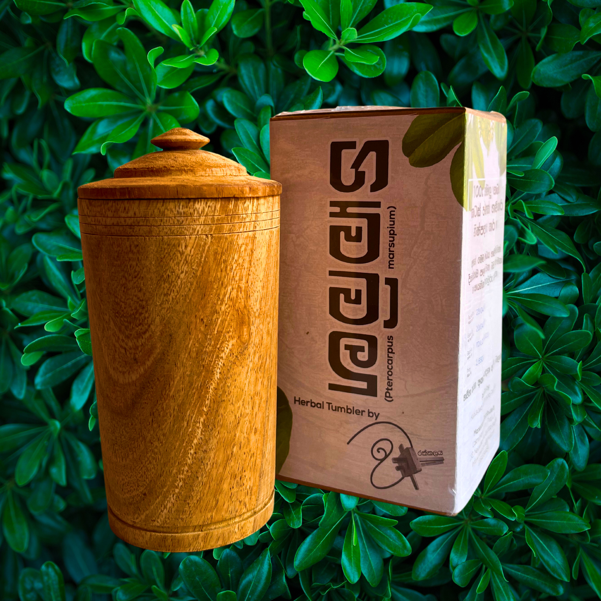
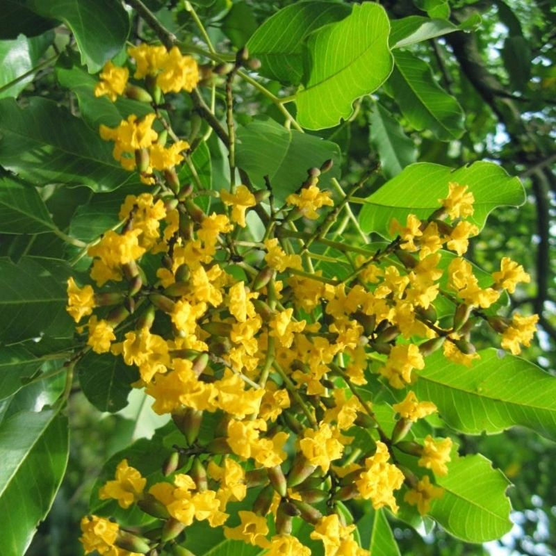
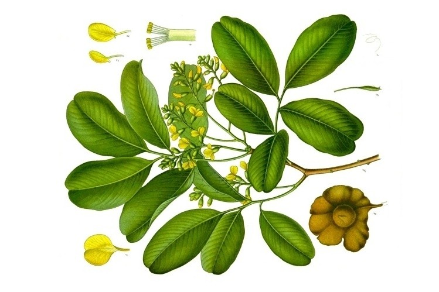

Hand-carved from pure Pterocarpus marsupium heartwood by Warakkalaya artisans in Matale.

Validated by Sri Lankan Government Universities for active botanical efficacy.
Clinically confirmed by Sri Sugatha Ayurvedic Hospital.
Supervised under Senior Ayurvedic Experts & Professor Piyal Marasinghe.
Certified production standards by the Industrial Technology Institute (ITI).
The Gammalu tree is legendary in Sri Lankan traditional medicine. The heartwood contains naturally occurring pterostilbene and flavonoids that leach gently into drinking water, aiding in regulating blood sugar levels and cholesterol naturally.
ශ්රී ලංකාවේ ප්රචලිත ගම්මාලු ඖෂධීය ශාඛයේ අරටුව පමණක් භාවිතා කර අපගේ කෝප්ප නිපදවනු ලබයි.


Follow these traditional usage guidelines for maximum effectiveness and proper care of your natural wood tumbler.

Located in Neluwakanda, Matale, Warakkalaya is an authentic Sri Lankan woodworking house. Beyond specialized herbal tumblers, we create premium custom furniture including chairs, sofas, almirahs (almura), and kawichchi built with lifetime wooden durability.
Inquire about custom furniture ordering